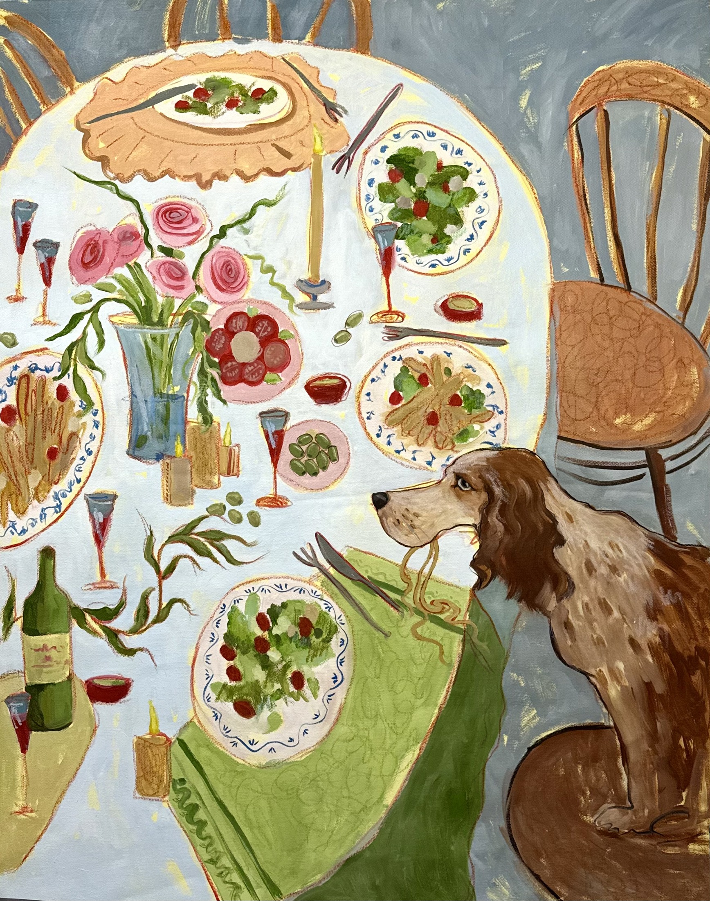

«Собачье искушение»
90 × 110 см, 2026
75 000 ₽
Холст на подрамнике, масло и масляная пастель.
Описание
Главный герой здесь — собака: в её взгляде читается и робость, и решимость.
Мне хотелось запечатлеть этот миг перед шалостью, когда секунды тянутся особенно долго. Картина — о маленьких домашних драмах, которые делают нашу жизнь живой и настоящей.